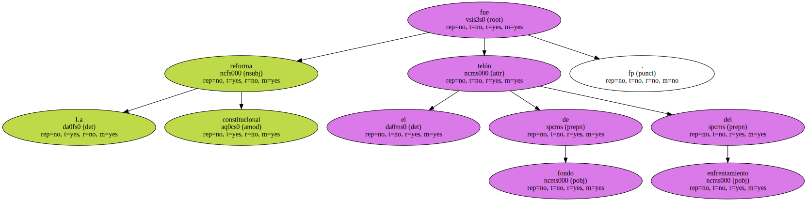
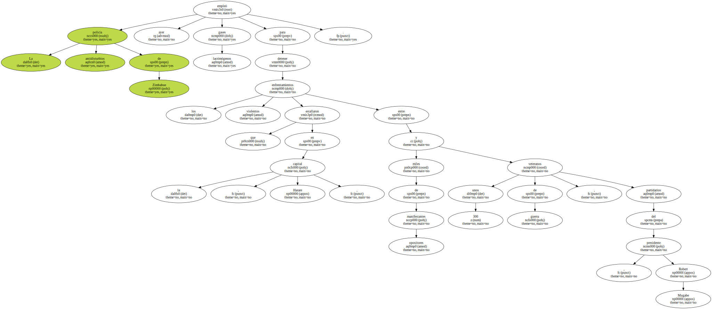
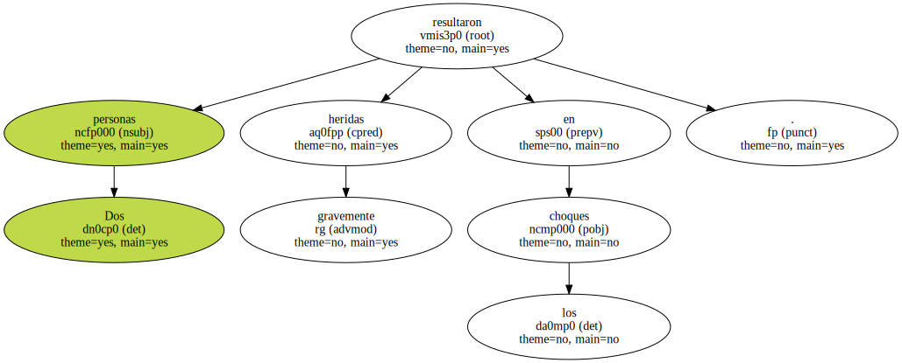
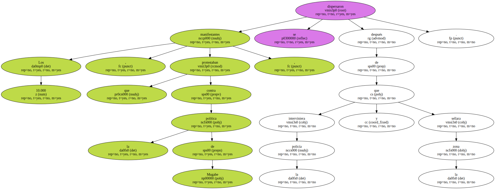
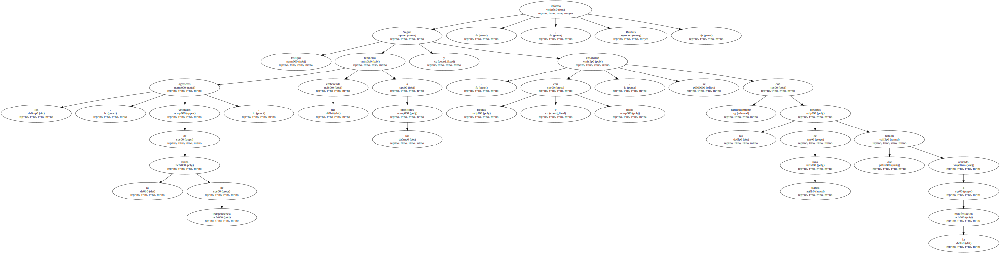
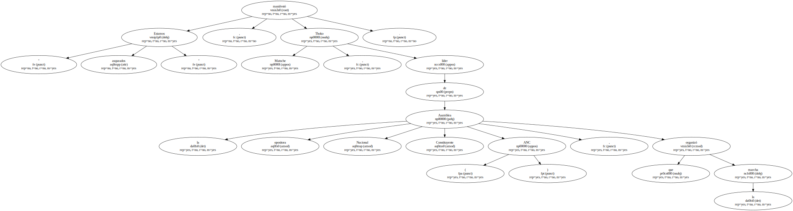
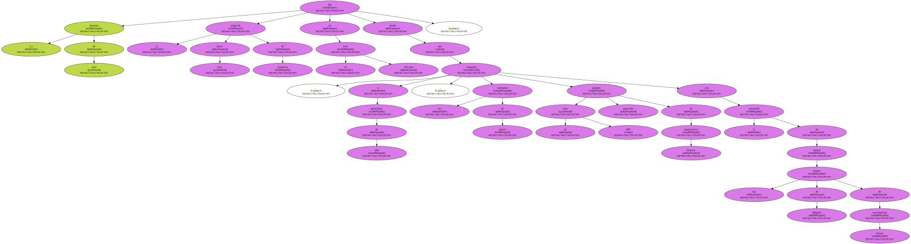
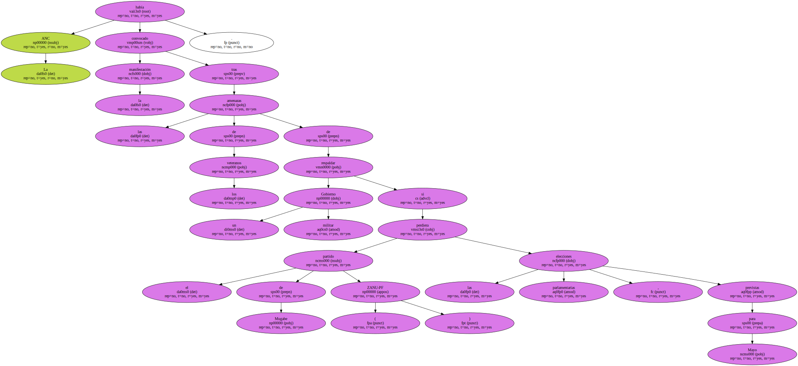
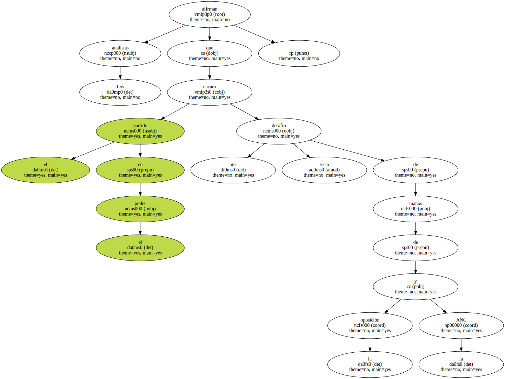
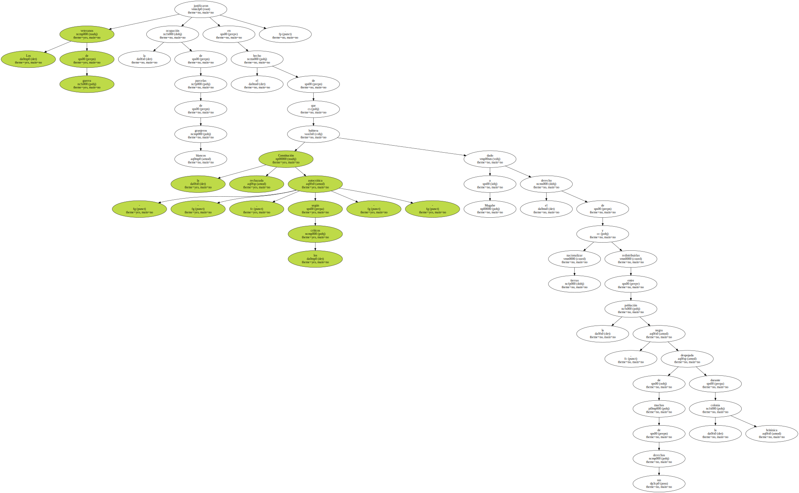

La reforma constitucional fue el telón de fondo del enfrentamiento.
La policía antidisturbios de Zimbabue empleó ayer gases lacrimógenos para detener los violentos enfrentamientos que estallaron en la capital , Harare , entre miles de manifestantes opositores y unos 300 veteranos de guerra , partidarios del presidente , Robert Mugabe.
Dos personas resultaron gravemente heridas en los choques.
Los 10.000 manifestantes , que protestaban contra la política de Mugabe , se dispersaron después de que la policía interviniera y sellara la zona.
Según testigos , los agresores , veteranos de la guerra de independencia , tendieron una emboscada a los opositores y , con piedras y palos , se ensañaron particularmente con las personas de raza blanca que habían acudido a la manifestación , informa Reuters.
" Estamos asqueados " , manifestó Thoko Matsche , líder de la opositora Asamblea Nacional Constituyente ( ANC ) , que organizó la marcha.
La protesta de ayer fue la más grave erupción de violencia en el país africano desde que , a principios de año , los veteranos de guerra ocuparon más de 600 granjas agrícolas de propietarios blancos con la intención de apoyar los planes de Mugabe de nacionalizar tierras.
La ANC había convocado la manifestación tras las amenazas de los veteranos de respaldar un Gobierno militar si el partido de Mugabe ( ZANU-PF ) perdiera las elecciones parlamentarias , previstas para Mayo.
El Gobierno de Mugabe pasa por su más grave crisis política y económica desde la independencia , en 1980 , tras perder , en Febrero , el referendo sobre la reforma constitucional.

Los analistas afirman que el partido en el poder encara un serio desafío de manos de la oposición y la ANC.
Los veteranos de guerra justificaron la ocupación de parcelas de granjeros blancos en el hecho de que la Constitución rechazada - - autocrática , según los críticos - - hubiera dado a Mugabe el derecho de nacionalizar tierras y redistribuirlas entre la población negra , despojada de muchos de sus derechos durante la colonia británica.
